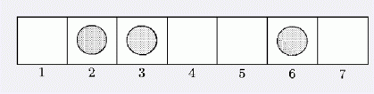

第一行有两个数m and n (2 <= m <= 109, 1 <= n <= 106, n < m) .然后接下来n个上升的整数表示初始被占据的格子编号.
让我们考虑一个在m x 1 的板子上玩的游戏,板子被从1 到 m编号. 现在板子上有n 个棋子, 每个都严格占据板子上的一个格子. 没有一个棋子占据格子m. 每个单独的移动遵循以下原则: 移动的人选择一个棋子把它移动到比它大的格子中第一个未被占领的格子里去. 两个选手交替移动, 谁先占据格子m, 谁赢. 下面是一个例子(m = 7), 一个选手可以把2 移到 4, 把3 移到 4 或者把6 移动到 7.

我们说当前选手的移动是winning 当且仅当他移动以后令一选手无论如何都无法赢他.我们想知道先手有多少个移动是winning的.
第一行有两个数m and n (2 <= m <= 109, 1 <= n <= 106, n < m) .然后接下来n个上升的整数表示初始被占据的格子编号.
输出先手有多少移动是winning的.
5 2
1 3
1